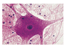
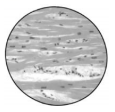
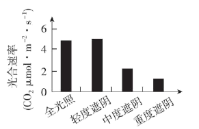
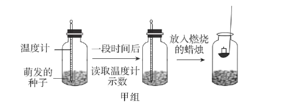
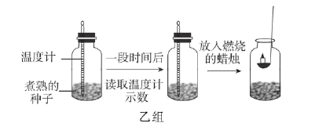

2022年北京市中考生物真题 · 选择题 第1、2、3、4、5题
1. 同学们用光学显微镜观察到如图所示几种组织细胞，其中具有细胞壁的是
A.  B.
B.

C.  D.
D. 
2. 草履虫是单细胞生物，下列相关叙述错误的是
A. 能对外界刺激作出反应B. 自己制造有机物
C. 主要通过分裂产生新的个体D. 能排出代谢废物
3. 2022年4月，我国科考队发现的一株高达83.2米的冷杉，刷新了中国最高树木纪录。水从该植株根部运输到茎顶端的主要动力是
A. 呼吸作用B. 光合作用C. 蒸腾作用D. 吸收作用
4. 香果树是我国特有的濒危珍稀植物，自然条件下成苗率低。为促进香果树繁育，科研人员研究不同遮阴程度对幼苗光合速率的影响，结果如图。下列相关叙述错误的是

A. 四组幼苗应置于相同环境温度下B. 光合速率受光照强度的影响
C. 轻度遮阴时幼苗释放的氧气多D. 重度遮阴条件最适宜培育幼苗
5. 同学们在课堂上利用萌发的和煮熟的种子（初始温度相同）探究植物的呼吸作用，实验过程及结果如图。


下列相关叙述错误的是
A. 煮熟的种子无法进行呼吸作用
B. 甲组温度计示数低于乙组
C. 甲组蜡烛迅速熄灭，乙组蜡烛继续燃烧
D. 实验可证明萌发的种子呼吸作用消耗氧气